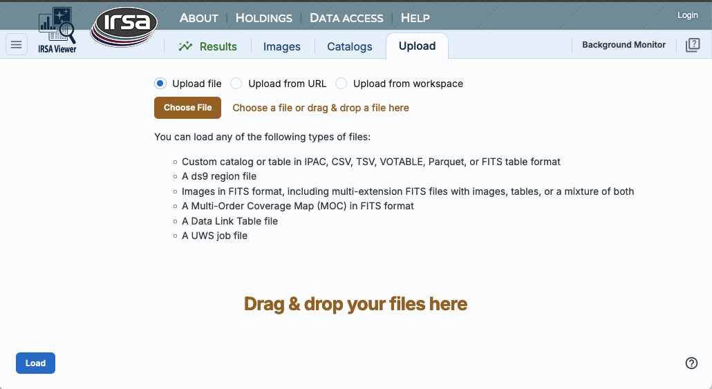
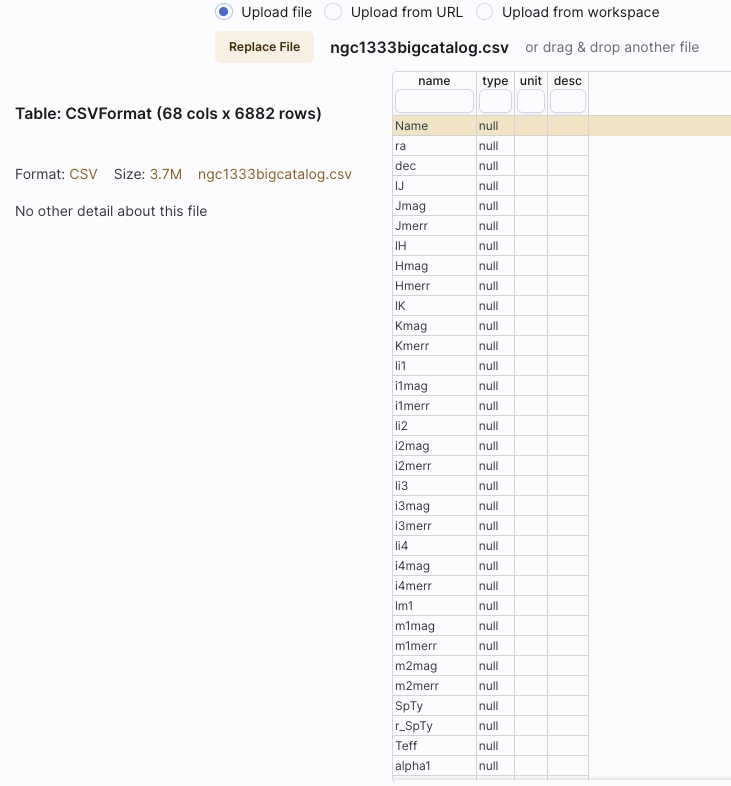
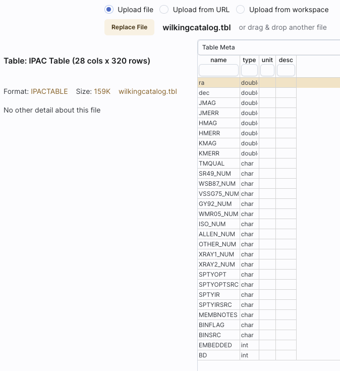
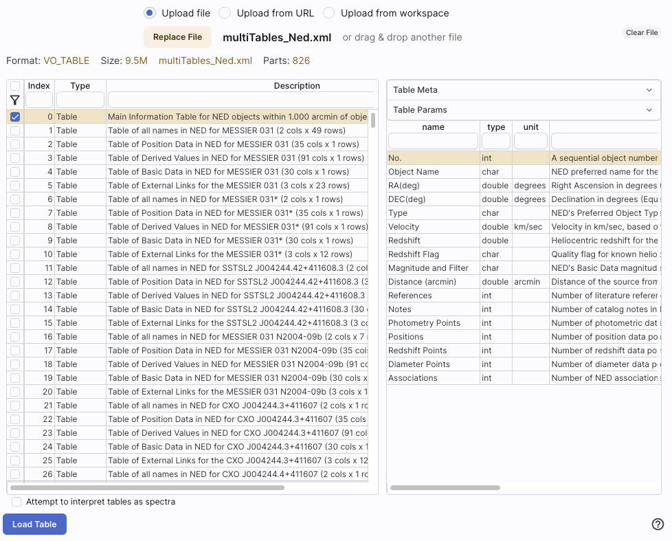

Firefly: Upload
You can upload images and tables and even other kinds of files (like
ds9 region files and MOC files!) to Firefly.
Contents of page/chapter:
+Introduction
+File Location
+Catalogs
+Region Files
+Images
+Spectra
+MOC Files
+Data Link Files
+UWS Job Files
The "Upload" tab is one of the tabs that
can appear on the top of the screen.
When you click on that tab, you get this:

The file that you are uploading can come from your own disk, the web
(type or paste in the URL), or from the IRSA Workspace  . (Note that you need to be logged
in to use the Workspace.)
. (Note that you need to be logged
in to use the Workspace.)
⚠ Tips and Troubleshooting
- If you have multiple HDUs in your file, you can load a plane, and
then come back to the the "Uploads" tab to pick another HDU
without having to upload it again. Or, you can load all of them at
once.
You may upload a file from disk (you can use the system browser to
identify the file, or drag-and-drop them into this window), from the
web via a URL You can use the system browser to find your file
(accessible by clicking "Browse"), or drag-and-drop your file into
this part of the browser window.
The file can be in any of a number of formats, which we now briefly
describe.
- IPAC table format (*.tbl)
- IPAC table format is plain text with a particular formatting. IRSA has a
table reformatting and validation service which may be helpful, or you
can download just about any catalog you find through IRSA, and mimic
that format.
If you want it recognized as a catalog, your table file MUST have RA
and Dec values, and unless it is specified, it assumes J2000. (See
also "tips and troubleshooting", below.)
You can add a "SYMBOL" parameter to change the shape
(X, SQUARE, CROSS, EMP_CROSS, DIAMOND, DOT) of catalog marks, e.g.:
\SYMBOL = X
You can add a "DEFAULT_COLOR" parameter to assign a CSS color name or
a HEX value to catalog marks, e.g., either of these two:
\DEFAULT_COLOR = lightcyan
\DEFAULT_COLOR = #00FF00
You can find the CSS color code or the CSS color HEX values online.
- Comma-separated values (CSV) format (*.csv)
- CSV format is often accepted by spreadsheet programs, and most
spreadsheet programs can output CSV. It is plain text, with values for
each column separated by commas.
- Tab-separated values (TSV) format (*.tsv)
- TSV format is sometimes accepted (or generated) by spreadsheet
programs, and sometimes in tabular data downloaded from journal
articles from the 90s. It is plain text, with values for each column
separated by tab characters.
- VOTable (*.vot)
- Virtual Observatory (VO) tables are a special case of XML tables.
(All VO Tables are XML but not all XML are VO Tables.)
It is a format developed by the International Virtual Observatory
Alliance (more information here ). XML
tables initially look to the human eye like it might be HTML, but they
are easier to parse with code. There are packages in astropy that
handle VO Tables.
- FITS files (*.fits)
- FITS tables can be loaded
into this tool. Note that this tool is flexible enough to handle
multiple header data units (HDUs), so that you can upload a FITS file
that has both images and tables. You can specify which HDU you would
like to load, and if you choose more than one image, it will give you
a choice of loading them into individual frames or all into one frame.
For more information on loading images this way, see below; there is another chapter entirely on images in this tool in general.
Nearly every file you load will result in a preview of the file you
have uploaded. Here are some example previews of catalog uploads:
Uploading a CSV file:

Uploading an IPAC table file:

Uploading an xml file:

The tables are then shown and, if catalogs, interacted with in the same way as
the other catalogs described here.
⚠ Tips and Troubleshooting
- If you would like to have your catalog overlaid on an image,
it needs to have RA and Dec columns. If the tool doesn't seem to
recognize your RA and Dec columns, check your formatting, or try
headers of "ra" instead of "RA" and "dec" instead of "DEC" or "Dec".
If you have columns like "_RA2000" and "_DE2000", it's going to be
confused.
- Unless specified, the tool assumes any coordinates you give it are
J2000.
- If there are no discernible positions in the uploaded file, it
will still let you plot columns from the file after you've loaded it;
it just can't overlay things on images in that case.
DS9
is a popular program for
visualizing FITS files. It uses a file format for storing image
overlays called region files. IRSA Viewer can write and read DS9
region files. Usually, you would read regions files from the image toolbar, but you can
also upload region files via this upload tab.
If you upload a region file here, the tool will just assume that you
meant to upload it via the image toolbar and overlay it on your
image(s). If you don't have an image loaded, it will warn you.
⚠ Tips and Troubleshooting
- If you want to overlay sources from a catalog, it is generally better
to actually create a catalog (as above) and upload/overlay that,
rather than a region file; you have more flexibility with what you can
do, how you can interact with a catalog, than you can with a region
file.
You can upload single- or multi-plane FITS files into the tool, as
well as multi-HDU FITS files. Again, it will give you a preview of
what it thinks you are uploading. For multi-plane or multi-HDU files,
you can select what portion(s) to upload.
Uploading a simple FITS file:

Uploading a FITS file with many image extensions, with just one
selected:
Uploading a FITS file with mixed extensions, with just one image
plane selected:
Uploading a multi-HDU FITS file containing a mixture of tables and
images. (Note that in this case, all planes are selected and the lower
left gives a choice for loading all the images into one window or one
extension per window. Note also that it has the option of attempting
to interpret tables as spectra.)

After you verify that the tool is reading your file correctly, and, if
applicable, selected the HDU(s) you wish to load, click "Load" to load
the file into the tool.
The images are then shown and interacted with in the same way as the
other images described here.
You can upload tables and tell the tool to attempt to load them in and
treat them as spectra. Again, it will give
you a preview of what it thinks you are uploading.
Uploading an IPAC tbl file that is a spectrum included, asking the tool to
interpret the table as a spectrum:

Uploading a FITS file that has a spectrum included, asking the tool to
interpret the table as a spectrum:
The spectra are then shown and interacted
with in the same way as the other spectra described here.
Multi-order
coverage map (MOC) files
tell you where data exist (or don't exist). You can upload these kinds
of files into this tool, and you can choose to view them as a table or
as an overlay on HiPS files.
You can also load a MOC file from the HiPS/MOC menu once you
have a HiPS image loaded.
A preview when uploading a MOC file :
A DataLink
is a protocol developed by the International Virtual Observatory
Alliance to specify more sophisticated linking of metadata and
services to the data itself. You might use this kind of file to
describe linkages to light curves or a light curve service from a
single-epoch catalog. These kinds of files can also be loaded into
this tool.
A Universal Worker Service (UWS) Pattern
is a protocol developed by the International Virtual Observatory
Alliance to manage asynchronous execution of jobs on a service. These
kinds of files can also be loaded into this tool.